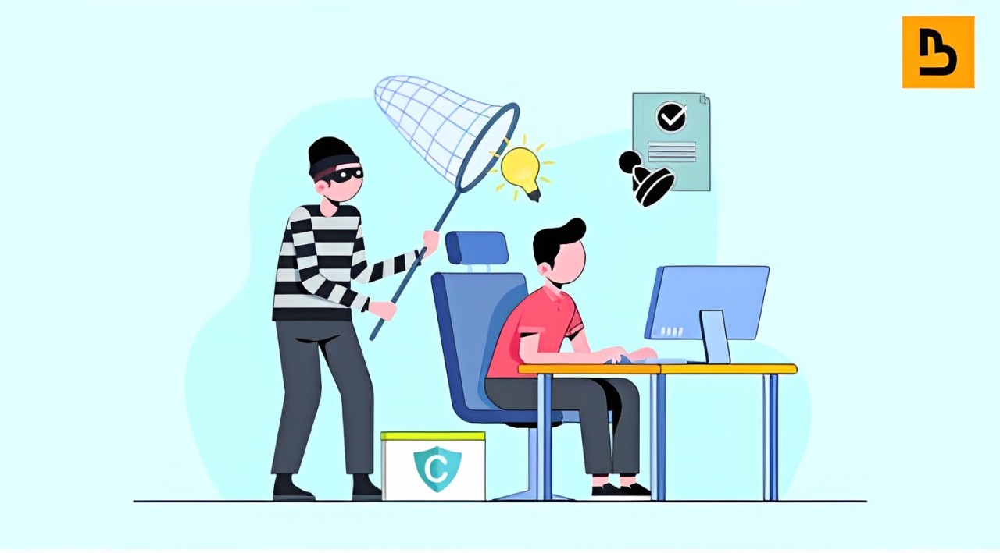

WHAT IS PLAGIARISM?
The word “plagiarism” comes from the Latin word for “kidnapper” and is considered a form of theft, a breach of honesty in the academic community.
Plagiarism, defined as the use of another’s work, words, or ideas without proper attribution, is a serious violation of intellectual integrity, ethics, and copyright laws. While it is not typically classified as a crime, its consequences can range from academic penalties to professional disgrace and significant financial liabilities. The repercussions of plagiarism vary across industries and cultures, reflecting differences in how intellectual property is perceived and protected.
Reported Cases of Plagiarism and Punishments
- Yale University Student Cases: In Yale College, students found guilty of plagiarism may face suspension or expulsion. These penalties are part of the institution’s strict academic integrity policy to uphold intellectual honesty.
- Eritrea’s Government Plagiarism: The Eritrean government plagiarized a UN declaration on human rights violations from a North Korean document. Although this did not lead to direct legal consequences, it highlighted a lack of respect for intellectual property and drew international criticism.
- Music Industry Cases: Artists like Robin Thicke and Pharrell Williams were involved in a high-profile case for plagiarizing Marvin Gaye’s “Got to Give It Up” in their song “Blurred Lines.” The court ruled in favor of Gaye’s estate, ordering them to pay $5 million in damages and royalties.
- Journalism: In journalism, plagiarized content can tarnish the reputation of both the journalist and their employer. Cases often lead to job termination and public apologies. For instance, journalist Jayson Blair was forced to resign from The New York Times after multiple allegations of plagiarism and fabrication.
Punishment Across Countries Based on IP Laws
- United States:
Plagiarism in academia is addressed through internal institutional policies, often leading to grade penalties, suspension, or expulsion. In professional settings, it may result in legal actions under copyright laws with fines ranging from $2,500 to $250,000 depending on the extent of the violation. Music and literary cases often involve lawsuits and damages based on copyright infringement. - Middle East (e.g., UAE):
Plagiarism in education is considered an insult to academic integrity. Students may face severe academic penalties, including failing grades or suspension. Cultural emphasis on attributing sources varies, making plagiarism awareness a critical aspect of education for international students. - East Asia (China, Japan, South Korea):
Plagiarism is less recognized as misconduct in some academic and cultural contexts due to a traditional focus on memorization and respect for original texts. In China, intellectual property is legally protected, but plagiarism within academia may not be as strictly enforced as in Western countries. - Africa:
In countries like Eritrea, the concept of plagiarism is not well-established, leading to challenges in enforcing academic integrity. Nigeria has taken steps to address plagiarism by developing anti-plagiarism tools like EagleScan for universities. - Eastern and Western Europe:
Eastern Europe has strict plagiarism policies supported by software tools like Crossplag. However, enforcement may vary culturally. Western European countries adopt practices similar to the U.S., emphasizing rigorous academic and professional standards.
| The main American academic integrity policies include the following; | |
|---|---|
| First-Degree Violation | The first violation is regarding the wrong citation and the citations that do not correspond to the page where the writer borrowed the content. This type of error is more common among first-year students who are not well informed about the course of the curriculum and the method of punishment. |
| Violation of the Second Degree | In second-level violations, the lack of information is not to blame, and the consequences of second-level plagiarism are up to a 25% grade reduction in that subject. |
| Third-Degree Violation | In the violation of the third level, there is repeated work of the students, as in the breach of the second level, the students try to be at an advantage by creating similar content to someone else. They tend to use the work of their friends, but this can go from 25% of the punishment to a higher level. |
| Violation of the Fourth Degree | Fourth-level violations are more serious violations that can lead to legal actions against someone who has committed plagiarism, fraud, or the presentation of someone else’s work without giving them the credit they deserve. |
Nature of Punishments
- Academic: Punishments range from grade reductions to expulsion for repeated or serious offenses.
- Legal: Hefty fines, lawsuits, and public apologies are common in copyright cases
- Professional: Termination of employment and damage to reputation are frequent in industries like journalism and entertainment.
Cultural and Industry-Specific Views
Cultural differences play a significant role in how plagiarism is understood and addressed. For instance:
- In East Asia, citing sources is sometimes seen as unnecessary because respect for authors is culturally ingrained.
- In journalism, plagiarism undermines trust and ethics, often leading to career-ending consequences.
- In music, copyright laws enforce originality and penalize duplication through monetary and legal penalties.
Conclusion
Plagiarism, whether intentional or unintentional, undermines creativity, honesty, and professionalism. Its consequences depend on the context and the legal, cultural, and institutional framework of the region. The best defense against plagiarism lies in education about intellectual property rights and the cultivation of ethical practices across academic, professional, and creative domains.
References:
Plagiarism In Different Countries